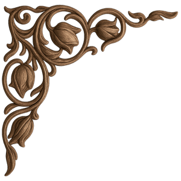
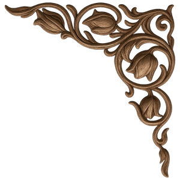
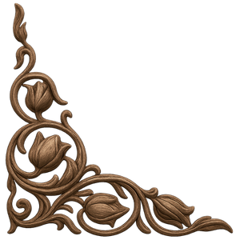
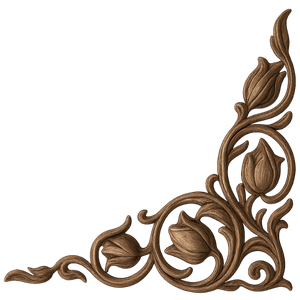

"Osmanlı’da Sükûnetin, İlim ve Merhametin Padişahı"
Osmanlı Devleti’nin sekizinci padişahı olan Sultan II. Bayezid, 1447 yılında Dimetoka’da dünyaya gelmiştir. Fatih Sultan Mehmed’in büyük oğlu olan Bayezid, küçük yaşlardan itibaren devlet yönetimine hazırlanmış; henüz 7 yaşındayken Hadım Ali Paşa nezaretinde Amasya Sancak Beyliği’ne atanmıştır. Bu görev, onun hem idari tecrübe kazanmasını hem de ilim ve kültürle yoğrulmasını sağlamıştır.

Fatih Sultan Mehmed’in 1481 yılında vefat etmesi üzerine, Sultan II. Bayezid 20 Mayıs 1481 tarihinde Osmanlı tahtına çıkmıştır. Yaklaşık 31 yıl süren saltanatı boyunca devletin istikrarını korumaya büyük önem vermiştir.
Onun yönetim anlayışı, fetih kadar düzen ve huzuru da önceleyen bir çizgide ilerlemiştir. Batıda ve doğuda çeşitli seferler düzenlemiş, Osmanlı topraklarını genişletmiş; ancak savaşçı kimliğinden çok barışçı ve dengeci yönüyle öne çıkmıştır. Bu nedenle onun dönemi, Osmanlı tarihinde görece bir sükûnet ve istikrar devri olarak kabul edilir.
Sultan II. Bayezid yalnızca bir hükümdar değil, aynı zamanda bir ilim ve sanat hamisidir. İyi bir eğitim almış; Arapça ve Farsça’yı ileri düzeyde öğrenmiş, İslami ilimlerin yanı sıra matematik, edebiyat ve felsefe alanlarında kendini geliştirmiştir. Sanata olan ilgisi ise oldukça derindir:
Döneminde ülkenin dört bir yanında camiler, medreseler, imaretler ve hastaneler yaptırarak büyük bir imar faaliyeti yürütmüştür. Özellikle Amasya, Edirne ve İstanbul onun eserleriyle zenginleşmiştir.
Sultan II. Bayezid’in en önemli eserlerinden biri, kendi adını taşıyan Edirne Sultan II. Bayezid Külliyesi’dir. 1484 yılında Edirne’ye geldiğinde, şehirde bir darüşşifa (hastane) ihtiyacı olduğu kendisine iletilmiş; bu ihtiyacı son derece yerinde bularak büyük bir külliye inşa edilmesini emretmiştir.

Kısa sürede tamamlanan bu külliye; Darüşşifa (hastane), Tıp Medresesi, İmaret (aşevi), Cami ve sosyal yapılar gibi bölümlerden oluşarak hem sağlık, hem eğitim hem de sosyal yardımlaşma hizmetlerini bir arada sunan örnek bir merkez haline gelmiştir. Bu külliye, Osmanlı’nın insanı merkeze alan medeniyet anlayışının en güçlü temsilcilerinden biri olarak günümüze ulaşmıştır.
62 yaşına geldiğinde tahtı oğlu Yavuz Sultan Selim’e bırakan Sultan II. Bayezid, hayatının son dönemini ibadet ve inziva ile geçirmek istemiştir. Doğduğu yer olan Dimetoka’ya gitmek üzere yola çıktığı sırada, Havsa yakınlarında 1512 yılında vefat etmiştir. Naaşı, İstanbul Beyazıt Camii’nin yanında bulunan türbesine defnedilmiştir.
| Öne Çıkan Özellik | Açıklama |
|---|---|
| Barış ve İstikrar | Saltanatı boyunca devletin iç ve dış dengelerini ustalıkla korumuştur. |
| İlim ve Sanat | Felsefe, matematik ve hat sanatı gibi alanlarda derin bilgi sahibidir. |
| Sosyal Devlet | Sağlık ve yardımlaşmayı "Külliye" modeliyle kurumsallaştırmıştır. |
Sultan II. Bayezid'in kurduğu eserler ve geliştirdiği anlayış, yalnızca kendi dönemine değil, sonraki yüzyıllara da yön vermiş; özellikle sağlık, eğitim ve sosyal hizmet alanlarında Osmanlı medeniyetinin zirve örneklerinden biri olmuştur.